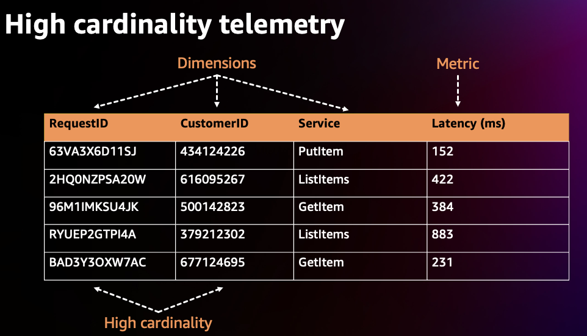

비용 최적화 - 옵저버빌리티¶
소개¶
옵저버빌리티 도구를 사용하면 워크로드를 효율적으로 감지, 수정 및 조사할 수 있습니다. EKS 사용이 늘어남에 따라 원격 측정 데이터 비용은 자연스럽게 증가합니다. 때로는 운영 요구 사항의 균형을 맞추고 비즈니스에 중요한 요소를 측정하고 옵저버빌리티 비용을 관리하는 것이 어려울 수 있습니다. 이 가이드에서는 옵저버빌리티의 세 가지 요소인 로그, 지표 및 트레이스에 대한 비용 최적화 전략에 중점을 둡니다. 이러한 각 모범 사례는 조직의 최적화 목표에 맞게 독립적으로 적용할 수 있습니다.
로깅¶
로깅은 클러스터의 애플리케이션을 모니터링하고 문제를 해결하는 데 중요한 역할을 합니다. 로깅 비용을 최적화하기 위해 사용할 수 있는 몇 가지 전략이 있습니다. 아래 나열된 모범 사례 전략에는 로그 보존 정책을 검토하여 로그 데이터 보관 기간에 대한 세분화된 제어를 구현하고, 중요도에 따라 로그 데이터를 다양한 스토리지 옵션으로 전송하고, 로그 필터링을 활용하여 저장되는 로그 메시지 유형의 범위를 좁히는 것이 포함됩니다. 로그 원격 분석을 효율적으로 관리하면 환경 비용을 절감할 수 있습니다.
EKS 컨트롤 플레인¶
컨트롤 플레인 로그 최적화¶
쿠버네티스 컨트롤 플레인은 클러스터를 관리하는 구성 요소 집합이며, 이러한 구성 요소는 다양한 유형의 정보를 로그 스트림으로 Amazon CloudWatch의 로그 그룹에 보냅니다. 모든 컨트롤 플레인 로그 유형을 활성화하면 이점이 있지만, 각 로그의 정보와 모든 로그 원격 분석을 저장하는 데 드는 관련 비용을 알고 있어야 합니다. 클러스터에서 Amazon CloudWatch 로그로 전송된 표준 CloudWatch Logs 데이터 수집 및 로그 스토리지 비용에 대한 요금이 부과됩니다. 활성화하기 전에 각 로그 스트림이 필요한지 평가하십시오.
예를 들어 비프로덕션 클러스터에서는 API 서버 로그와 같은 특정 로그 유형을 분석용으로만 선택적으로 활성화하고 이후에는 비활성화합니다. 하지만 이벤트를 재현할 수 없고 문제를 해결하려면 추가 로그 정보가 필요한 프로덕션 클러스터의 경우 모든 로그 유형을 활성화할 수 있습니다. 컨트롤 플레인 비용 최적화 구현에 대한 자세한 내용은 이 블로그 게시물에 있습니다.
S3로 로그 스트리밍¶
또 다른 비용 최적화 모범 사례는 CloudWatch Logs 구독을 통해 컨트롤 플레인 로그를 S3로 스트리밍하는 것입니다. CloudWatch 로그 구독을 활용하면 로그를 선택적으로 S3로 전달할 수 있어 CloudWatch에 로그를 무기한으로 보관하는 것보다 비용 효율적인 장기 스토리지를 제공합니다. 예를 들어 프로덕션 클러스터의 경우 중요 로그 그룹을 생성하고 구독을 활용하여 15일 후에 이러한 로그를 S3로 스트리밍할 수 있습니다. 이렇게 하면 분석을 위해 로그에 빠르게 액세스할 수 있을 뿐만 아니라 로그를 보다 비용 효율적인 스토리지로 이동하여 비용을 절약할 수 있습니다.
Attention
2023년 9월 5일부터 EKS 로그는 아마존 클라우드워치 로그에서 Vended 로그로 분류됩니다.Vended 로그는 고객을 대신하여 AWS 서비스에서 기본적으로 게시하는 특정 AWS 서비스 로그로, 대량 구매 할인 요금으로 제공됩니다. Vended 로그 요금에 대해 자세히 알아보려면 Amazon CloudWatch 요금 페이지를 방문하십시오.
EKS 데이터 플레인¶
로그 보존¶
Amazon CloudWatch의 기본 보존 정책은 로그를 무기한으로 보관하고 만료되지 않도록 하는 것이므로 AWS 지역에 해당하는 스토리지 비용이 발생합니다. 스토리지 비용을 줄이려면 워크로드 요구 사항에 따라 각 로그 그룹의 보존 정책을 사용자 지정할 수 있습니다.
개발 환경에서는 긴 보존 기간이 필요하지 않을 수 있습니다. 하지만 프로덕션 환경에서는 문제 해결, 규정 준수 및 용량 계획 요구 사항을 충족하기 위해 더 긴 보존 정책을 설정할 수 있습니다. 예를 들어, 연휴 성수기에 전자 상거래 애플리케이션을 실행하는 경우 시스템의 부하가 가중되어 즉시 눈에 띄지 않을 수 있는 문제가 발생할 수 있습니다. 자세한 문제 해결 및 사후 이벤트 분석을 위해 로그 보존 기간을 더 길게 설정하는 것이 좋습니다.
AWS CloudWatch 콘솔에서 보존 기간 구성 또는 AWS API에서 각 로그 그룹을 기준으로 1일에서 10년까지 보존 기간을 설정할 수 있습니다. 보존 기간을 유연하게 설정하면 중요한 로그를 관리하는 동시에 로그 스토리지 비용을 절감할 수 있습니다.
로그 스토리지 옵션¶
스토리지는 옵저버빌리티 비용의 큰 요인이므로 로그 스토리지 전략을 최적화하는 것이 중요합니다. 전략은 성능과 확장성을 유지하면서 워크로드 요구 사항에 맞게 조정해야 합니다. 로그 저장 비용을 줄이기 위한 한 가지 전략은 AWS S3 버킷과 다양한 스토리지 티어를 활용하는 것입니다.
로그를 S3로 직접 전달¶
개발 환경과 같이 덜 중요한 로그를 Cloudwatch 대신 S3에 직접 전달하는 것을 고려해 보세요. 이는 로그 스토리지 비용에 즉각적인 영향을 미칠 수 있습니다. 한 가지 옵션은 FluentBit을 사용하여 로그를 S3로 바로 전달하는 것입니다. FluentBit이 보존을 위해 컨테이너 로그를 전송하는 목적지인 [OUTPUT] 섹션에서 이를 정의합니다. 추가 구성 파라미터 여기를 검토하십시오.
[OUTPUT]
Name eks_to_s3
Match application.*
bucket $S3_BUCKET name
region us-east-2
store_dir /var/log/fluentbit
total_file_size 30M
upload_timeout 3m
단기 분석을 위해서만 CloudWatch로 로그를 전달합니다.¶
데이터에 대한 즉각적인 분석을 수행해야 하는 프로덕션 환경과 같이 더 중요한 로그의 경우 로그를 CloudWatch로 전달하는 것을 고려해 보십시오. FluentBit이 보존을 위해 컨테이너 로그를 전송하는 목적지인 [OUTPUT] 섹션에서 이를 정의합니다. 추가 구성 파라미터 여기를 검토하십시오.
[OUTPUT]
Name eks_to_cloudwatch_logs
Match application.*
region us-east-2
log_group_name fluent-bit-cloudwatch
log_stream_prefix from-fluent-bit-
auto_create_group On
그러나 이것이 비용 절감에 즉각적인 영향을 미치지는 않습니다. 추가 비용 절감을 위해 이러한 로그를 Amazon S3로 내보내야 합니다.
CloudWatch에서 Amazon S3로 내보내기¶
Amazon CloudWatch 로그를 장기간 저장하려면 Amazon EKS CloudWatch 로그를 Amazon Simple Storage(S3) 서비스로 내보내는 것이 좋습니다.콘솔 또는 API를 통해 내보내기 작업을 생성하여 Amazon S3 버킷으로 로그를 전달할 수 있습니다. 이렇게 하면 Amazon S3는 비용을 추가로 절감할 수 있는 다양한 옵션을 제공합니다. 자체 Amazon S3 수명 주기 규칙을 정의하여 필요에 맞는 스토리지 클래스로 로그를 이동하거나, Amazon S3 Intelligent-Tiering 스토리지 클래스를 활용하여 AWS가 사용 패턴에 따라 데이터를 장기 스토리지로 자동 이동하도록 할 수 있습니다. 자세한 내용은 이 블로그를 참조하십시오. 예를 들어 프로덕션 환경의 경우 로그가 30일 이상 CloudWatch에 보관된 후 Amazon S3 버킷으로 내보내집니다. 그런 다음 나중에 로그를 다시 참조해야 하는 경우 Amazon Athena를 사용하여 Amazon S3 버킷의 데이터를 쿼리할 수 있습니다.
로그 레벨 조정¶
애플리케이션 작성 시 로깅 레벨을 조정하여 선별적으로 로깅을 남깁니다. 기본적으로 애플리케이션과 노드 모두 로그를 출력합니다. 애플리케이션 로그의 경우 워크로드 및 환경의 중요도에 맞게 로그 수준을 조정하십시오. 예를 들어, 아래의 Java 애플리케이션은 일반적인 기본 애플리케이션 구성인 INFO 로그를 출력하므로 코드에 따라 로그 데이터의 양이 많아질 수 있습니다.
import org.apache.log4j.*;
public class LogClass {
private static org.apache.log4j.Logger log = Logger.getLogger(LogClass.class);
public static void main(String[] args) {
log.setLevel(Level.INFO);
log.debug("This is a DEBUG message, check this out!");
log.info("This is an INFO message, nothing to see here!");
log.warn("This is a WARN message, investigate this!");
log.error("This is an ERROR message, check this out!");
log.fatal("This is a FATAL message, investigate this!");
}
}
개발 환경에서는 로그 수준을 'DEBUG'로 변경하세요. 이렇게 하면 문제를 디버깅하거나 잠재적인 문제를 프로덕션에 적용하기 전에 찾아내는 데 도움이 될 수 있습니다.
프로덕션 환경에서는 로그 수준을 ERROR 또는 FATAL로 수정하는 것을 고려해 보십시오. 이렇게 하면 애플리케이션에 오류가 있는 경우에만 로그가 출력되므로 로그 출력이 줄어들고 애플리케이션 상태와 관련된 중요한 데이터에 집중할 수 있습니다.
다양한 쿠버네티스 구성 요소의 로그 수준을 미세 조정할 수 있습니다.예를 들어, EKS 노드 운영 체제로 Bottlerocket 을 사용하는 경우, kubelet 프로세스 로그 수준을 조정할 수 있는 구성 설정이 있습니다.이 구성 설정의 스니펫은 다음과 같다. 'kubelet' 프로세스의 로깅 상세도를 조정하는 2의 기본 로그 레벨을 참고하세요.
[settings.kubernetes]
log-level = "2"
image-gc-high-threshold-percent = "85"
image-gc-low-threshold-percent = "80"
개발 환경의 경우 추가 이벤트를 보려면 로그 수준을2 이상으로 설정할 수 있습니다. 이는 디버깅에 유용합니다. 프로덕션 환경의 경우 중요 이벤트만 보려면 레벨을 0로 설정할 수 있습니다.
필터 활용하기¶
기본 EKS FluentBit 구성을 사용하여 컨테이너 로그를 Cloudwatch로 보내는 경우, FluentBit은 아래의 [INPUT] 구성 블록에 표시된 대로 쿠버네티스 메타데이터가 보강된ALL 애플리케이션 컨테이너 로그를 캡처하여 CloudWatch에 전송합니다.
[INPUT]
Name tail
Tag application.*
Exclude_Path /var/log/containers/cloudwatch-agent*, /var/log/containers/fluent-bit*, /var/log/containers/aws-node*, /var/log/containers/kube-proxy*
Path /var/log/containers/*.log
Docker_Mode On
Docker_Mode_Flush 5
Docker_Mode_Parser container_firstline
Parser docker
DB /var/fluent-bit/state/flb_container.db
Mem_Buf_Limit 50MB
Skip_Long_Lines On
Refresh_Interval 10
Rotate_Wait 30
storage.type filesystem
Read_from_Head ${READ_FROM_HEAD}
위의 [INPUT] 섹션은 모든 컨테이너 로그를 수집하고 있습니다. 이로 인해 필요하지 않을 수도 있는 대량의 데이터가 생성될 수 있습니다. 이 데이터를 필터링하면 CloudWatch로 전송되는 로그 데이터의 양이 줄어들어 비용을 절감할 수 있습니다. 로그가 CloudWatch로 출력되기 전에 로그에 필터를 적용할 수 있습니다. Fluentbit은 [필터] 섹션에서 이를 정의합니다. 예를 들어 Kubernetes 메타데이터가 로그 이벤트에 추가되지 않도록 필터링하면 로그 볼륨을 줄일 수 있습니다.
[FILTER]
Name nest
Match application.*
Operation lift
Nested_under kubernetes
Add_prefix Kube.
[FILTER]
Name modify
Match application.*
Remove Kube.<Metadata_1>
Remove Kube.<Metadata_2>
Remove Kube.<Metadata_3>
[FILTER]
Name nest
Match application.*
Operation nest
Wildcard Kube.*
Nested_under kubernetes
Remove_prefix Kube.
메트릭 지표¶
메트릭 지표는 시스템 성능과 관련된 중요한 정보를 제공합니다. 시스템 관련 또는 사용 가능한 모든 리소스 메트릭을 중앙 집중식으로 통합하면 성능 데이터를 비교하고 분석할 수 있습니다. 이러한 중앙 집중식 접근 방식을 사용하면 리소스를 확장하거나 축소하는 등 정보에 입각한 전략적 결정을 내릴 수 있습니다. 또한 메트릭 지표는 리소스 상태를 평가하는 데 중요한 역할을 하므로 필요한 경우 사전 조치를 취할 수 있습니다.일반적으로 옵저버빌리티 비용은 원격 측정 데이터 수집 및 보존에 따라 조정됩니다. 다음은 메트릭 원격 측정 비용을 줄이기 위해 구현할 수 있는 몇 가지 전략입니다. 중요한 메트릭 지표만 수집하고, 원격 측정 데이터의 카디널리티를 줄이고, 원격 측정 데이터 수집의 세부 수준을 조정하는 것입니다.
중요한 사항을 모니터링하고 필요한 항목만 수집하세요¶
첫 번째 비용 절감 전략은 수집하는 지표의 수를 줄이고 결과적으로 유지 비용을 줄이는 것입니다.
- 먼저 이해관계자의 요구 사항을 거꾸로 검토하여 가장 중요한 지표를 결정하세요. 성공 지표는 사람마다 다릅니다! 좋은이 어떤 모습인지 알고 측정하세요.
- 지원 중인 워크로드를 자세히 살펴보고 '골든 시그널'이라고도 하는 핵심 성과 지표(KPI) 를 파악해 보세요. 이는 비즈니스 및 이해관계자의 요구 사항에 맞게 조정되어야 합니다. 서비스 안정성을 관리하려면 Amazon CloudWatch와 Metric Math를 사용하여 SLI, SLO 및 SLA를 계산하는 것이 중요합니다. 이 가이드에 설명된 모범 사례를 따라 EKS 환경의 성능을 효과적으로 모니터링하고 유지 관리하십시오.
- 그런 다음 여러 인프라 계층을 계속 검토하여 워크로드 KPI와 연결 및 상호 연관 EKS 클러스터, 노드 및 추가 인프라 메트릭을 수행하십시오. 비즈니스 지표와 운영 지표를 서로 연관시키고 관찰된 영향을 기반으로 결론을 도출할 수 있는 시스템에 저장하세요. 4.EKS는 컨트롤 플레인, 클러스터 kube-state-metrics, 파드 및 노드의 메트릭을 노출합니다. 이러한 모든 지표의 관련성은 요구 사항에 따라 다르지만, 여러 계층에 걸쳐 모든 단일 지표가 필요하지는 않을 수도 있습니다. 이 EKS 필수 지표 가이드를 EKS 클러스터 및 워크로드의 전반적인 상태를 모니터링하기 위한 기준으로 사용할 수 있습니다.
다음은 프로메테우스 스크랩 구성의 예시로, kubelet 메트릭만 유지하기 위해 'relabel_config'를 사용하고 모든 컨테이너 메트릭을 삭제하기 위해 'metric_relabel_config'를 사용합니다.
kubernetes_sd_configs:
- role: endpoints
namespaces:
names:
- kube-system
bearer_token_file: /var/run/secrets/kubernetes.io/serviceaccount/token
tls_config:
insecure_skip_verify: true
relabel_configs:
- source_labels: [__meta_kubernetes_service_label_k8s_app]
regex: kubelet
action: keep
metric_relabel_configs:
- source_labels: [__name__]
regex: container_(network_tcp_usage_total|network_udp_usage_total|tasks_state|cpu_load_average_10s)
action: drop
해당하는 경우 카디널리티 줄이기¶
카디널리티란 특정 지표 집합에 대한 데이터 값 (예: 프로메테우스 레이블) 과 데이터 값의 고유성을 나타냅니다. 카디널리티가 높은 지표에는 여러 차원이 있으며 각 차원 지표 조합은 고유성이 더 높습니다. 카디널리티가 높을수록 메트릭 원격 측정 데이터 크기 및 스토리지 요구 사항이 커져 비용이 증가합니다.
아래와 같이 카디널리티가 높은 예제에서는 메트릭 지표인 Latency는 RequestID, CustomerID 및 Service와 같은 여러 차원(Dimension)을 가지고 있고, 각 차원에는 고유한 값이 많이 존재하는 것을 볼 수 있습니다. 카디널리티는 차원당 가능한 값 수의 조합을 측정한 값입니다. Prometheus에서는 각각의 고유한 차원/레이블 세트를 새로운 지표로 간주하므로 카디널리티가 높으면 지표가 더 많아집니다.

메트릭 지표(클러스터, 네임스페이스, 서비스, 파드, 컨테이너 등)가 많고 지표 당 차원/레이블이 많은 EKS 환경에서는 카디널리티가 커지는 경향이 있습니다. 비용을 최적화하려면 수집하는 지표의 카디널리티를 신중하게 고려해야 합니다. 예를 들어 클러스터 수준에서 시각화를 위해 특정 지표를 집계하는 경우 네임스페이스 레이블과 같이 하위 계층에 있는 추가 레이블을 삭제할 수 있습니다.
prometheus에서 카디널리티가 높은 메트릭을 식별하려면 다음 PROMQL 쿼리를 실행하여 메트릭 수가 가장 많은 스크랩 대상(카디널리티) 을 확인할 수 있습니다.
다음 PROMQL 쿼리는 지표 이탈률이 가장 높은 스크랩 대상(특정 스크랩에서 생성된 새 지표 시리즈 수)을 결정하는 데 도움이 될 수 있습니다.
grafana를 사용하는 경우 Grafana Lab의 Mimirtool을 사용하여 그라파나 대시보드와 프로메테우스 규칙을 분석하여 사용하지 않는 하이 카디널리티 메트릭을 식별할 수 있습니다. 이 가이드를 참조하여 mimirtool analyze 및 mimirtool analyze prometheus 명령을 사용하여 대시보드에서 참조되지 않는 활성 메트릭을 식별하는 방법에 대해 설명합니다.
메트릭 주기 고려¶
매 분보다 매 초와 같이 더 높은 단위로 지표를 수집하면 원격 분석을 수집하고 저장하는 양에 큰 영향을 주어 비용이 증가할 수 있습니다. 일시적인 문제를 확인할 수 있을 만큼 충분히 세분화된 수준과 비용 효율적일 만큼 충분히 낮은 수준 사이의 균형을 맞추는 합리적인 스크랩 또는 지표 수집 간격을 결정하세요. 용량 계획 및 더 긴 기간 분석에 사용되는 지표의 세분성을 줄이십시오.
아래는 기본 AWS Distro for Opentelemetry(ADOT) EKS 애드온 컬렉터 구성의 스니펫입니다.
Attention
글로벌 프로메테우스 수집 간격은 15초로 설정되어 있습니다. 이 수집 간격을 늘리면 프로메테우스에서 수집되는 메트릭 데이터의 양이 줄어들 수 있습니다.
apiVersion: opentelemetry.io/v1alpha1
kind: OpenTelemetryCollector
metadata:
name: my-collector-amp
...
config: |
extensions:
sigv4auth:
region: "<YOUR_AWS_REGION>"
service: "aps"
receivers:
#
# Scrape configuration for the Prometheus Receiver
# This is the same configuration used when Prometheus is installed using the community Helm chart
#
prometheus:
config:
global:
scrape_interval: 15s
scrape_timeout: 10s
추적(트레이싱)¶
추적(트레이싱)과 관련된 주요 비용은 추적(트레이싱) 저장소 생성에서 비롯됩니다. 추적(트레이싱)의 목표는 성능 측면을 진단하고 이해하는 데 필요한 충분한 데이터를 수집하는 것입니다. 하지만 X-Ray 추적(트레이싱) 비용은 X-Ray로 전송된 데이터를 기반으로 하므로 전송된 흔적을 지워도 비용이 절감되지는 않습니다. 적절한 분석을 수행할 수 있도록 데이터를 유지하면서 추적(트레이싱) 비용을 절감할 수 있는 방법을 검토해 보겠습니다.
샘플링 규칙 적용¶
X-Ray 샘플링 속도는 기본적으로 보수적입니다. 수집하는 데이터의 양을 제어할 수 있는 샘플링 규칙을 정의하십시오. 이렇게 하면 비용을 절감하는 동시에 성능 효율성이 향상됩니다. 샘플링 비율을 낮추면 더 낮은 비용 구조를 유지하면서 워크로드에 필요한 것만 요청에서 트레이스를 수집할 수 있습니다.
예를 들어, 하나의 문제가 있는 경로에 대한 모든 요청의 추적(트레이싱)을 디버깅하려는 Java 애플리케이션이 있습니다.
Configure via the SDK to load sampling rules from a JSON document
{
"version": 2,
"rules": [
{
"description": "debug-eks",
"host": "*",
"http_method": "PUT",
"url_path": "/history/*",
"fixed_target": 0,
"rate": 1,
"service_type": "debug-eks"
}
],
"default": {
"fixed_target": 1,
"rate": 0.1
}
}
콘솔을 통해

AWS Distro for OpenTelemetry (ADOT)으로 테일 샘플링 적용 (ADOT)¶
ADOT 테일 샘플링을 사용하면 서비스에서 수집되는 트레이스의 양을 제어할 수 있습니다. 하지만 테일 샘플링을 사용하면 요청의 모든 범위가 처음에 완료되는 대신 완료된 후에 샘플링 정책을 정의할 수 있습니다. 이로 인해 CloudWatch로 전송되는 원시 데이터의 양이 더욱 제한되어 비용이 절감됩니다.
예를 들어 랜딩 페이지 트래픽의 1% 와 결제 페이지 요청의 10% 를 샘플링하는 경우 30분 동안 300개의 트레이스가 남을 수 있습니다. 특정 오류를 필터링하는 ADOT 테일 샘플링 규칙을 사용하면 트레이스가 200개 남게 되어 저장되는 트레이스 수가 줄어들 수 있습니다.
processors:
groupbytrace:
wait_duration: 10s
num_traces: 300
tail_sampling:
decision_wait: 1s # This value should be smaller than wait_duration
policies:
- ..... # Applicable policies**
batch/tracesampling:
timeout: 0s # No need to wait more since this will happen in previous processors
send_batch_max_size: 8196 # This will still allow us to limit the size of the batches sent to subsequent exporters
service:
pipelines:
traces/tailsampling:
receivers: [otlp]
processors: [groupbytrace, tail_sampling, batch/tracesampling]
exporters: [awsxray]
Amazon S3 스토리지 옵션 활용¶
트레이스를 저장하려면 AWS S3 버킷과 다양한 스토리지 클래스를 활용해야 합니다.보존 기간이 만료되기 전에 트레이스를 S3로 익스포트하십시오.Amazon S3 수명 주기 규칙을 사용하여 트레이스 데이터를 요구 사항에 맞는 스토리지 클래스로 이동합니다.
예를 들어 90일이 지난 트레이스가 있는 경우 Amazon S3 인텔리전트 티어링 은 사용 패턴에 따라 데이터를 장기 스토리지로 자동으로 이동할 수 있습니다. 트레이스를 나중에 다시 참조해야 하는 경우 Amazon Athena를 사용하여 Amazon S3에 있는 데이터를 쿼리할 수 있습니다. 이를 통해 분산 트레이스 비용을 더욱 절감할 수 있습니다.
추가 리소스:¶
- 옵저버빌리티 모범 사례 가이드
- 모범 사례 메트릭 모음best-practices-metrics-collection/
- AWS re:Invent 2022 - Amazon의 옵저버빌리티 모범 사례 (COP343)
- AWS re:Invent 2022 - 옵저버빌리티: 현대 애플리케이션을 위한 모범 사례 (COP344)